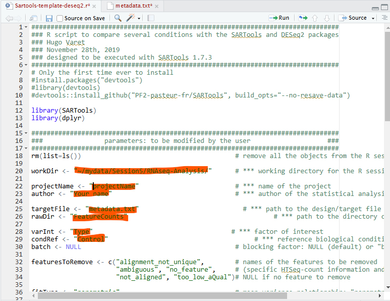

Differential Gene Analysis
Contrasting the expression profile of the samples is typically done with one of two R packages: Deseq2 or EdgeR (the mac vs windows of the RNAseq fight), however a multitude of alternatives exist. These packages perform the normalization and statistical steps of contrasting samples as defined in a metadata file stating your experimental design (replicates, tissue type, treatment etc). The output here is a range of significant genes, ordinance and cluster analysis of sample similarity, and various quality control figures.
Following these steps, there are an almost infinite number of tools and packages to look deeper into your data, find experimentally specific insights, and prior published data to contrast against.
Key Statistical Concepts - Flase Discovery Rate (FDR)
The workshop will use tools that exploit statistical approaches to identify differential expressed genes (DEGs). You will not need to derive the mathematical formula underpinning these concepts or deploy the algorithums from first principles since the software you will use does this for you but it is worth knowing the background. There is an excellent academic from UNC-Chapel Hill, Prof Josh Starmer, who runs a youtube channel called StatQuest this deal with a large range of biological stats and has some great annotations to explain them, I am going to suggest you watch two of his videos to orientate you about the key statistical concepts for this session:
3.1-3.5 DEG pipelines
Processing data from counts to DEG lists requires a number of complex steps - rather than code these individually we recommned using a ‘wrapper’ program that executes the steps within an automated workflow. NCBI provides theis function for a selection of datasets archived in GEO - Geo2R Instrctions. For count data that we have genearted ourselveswe are recommending using a wrapper called SARTools. This wrapper supports simple 2 state analsysis but generates plots for data exploration, normalisation, dispersion, MA/Volcano Plots and DEG list. Also it generates a DESeq2 (or edgeR) object (dds object) that can be used for more complex analysis.
A simple Guide to SARTools
1. Download or copy the SARTools template script
#Download
wget https://github.com/PF2-pasteur-fr/SARTools/blob/master/template_script_DESeq2.r
# an example metadata file can be viewed in workshop example below
# copy script, metadata and feature counts from classdata
mkdir
cp -R ~/classdata/Session5/RNAseq-Analysis/ ~/mydata/2. Download Workshop data
Ensure you analysis folder has a sub-folder which is callled FeatureCounts that contains individual files containing your data and these are referenced in your metadata file - you do not need a subdirectory location as we will add this to the script.
Your data represents a set of nine human neuronal differential RNAseq samples have been sequenced, consisting of 6x control samples (3x two different individuals) and 3x a deletion mutant of the 1q21.1 cytogenetic region of the human genome, and 3x of a duplication of this region.
Deletions and alterations to this region has a range of impacts on neuropsychiatric disorders and is under active study. See the omim and the Wikipedia page is remarkably informative! 1q21.1_deletion_syndrome.

3. Open your POSIT R-studio session
We recommend using R-studio either on your local machine or using the POSIT based server option for reproducibility.
Open SARTools script and edit the areas highlighted in red.

These parameters are:
workDir - location of your working directory (easy way of identifying this in Rstudio is to navigate to your working directory in the files tab and then use More>Set As Working Directory to show your workdir in the console window).
projectName - Your choosen name for you output files
author - Your Name
targetFile - metadata file name
rawDir - Directory containing your count files
VarInt - The parameter you wish you analyse
conRef - The description within your choosen parameter that you wish to use as your control
N.B. Line 39 there is a parameter for your level is statistical significance - this is by default 0.5 you can chnage this if you need.
4. Now run the script
At the top right of your R script window there is a ‘Run’ pull down list - select this and highlight ‘Run all’.
5. Review Outputs
HTML file - this contains your data analsyis with comprehensive explainatory text. It provides key plots, parameters and summary data.
table - this folder contains tab separated varible files of your results (these can be downloaded and explored in excel), both as a complete list but also separate files for up and down regulated gens passing the parameter you defined.
figures - this folder contains the images used in the generation of the html output.
NB - if you change parameters and rerun the script it will overwrite the table and image directories so if you want to keep these make sure you rename name them before rerunning the script.
out.DEseq2/dds Object - This is a very useful object as many secondary analysis steps can use this object for further analysis.
We strongly recommend you save your R session when finished so you do not need to recalulate the dds object.
Extension Workshop analsyis of RNAseq Data with SARtools
Dataset to use - Geo:GDS2565
Once you have looked at the RNAseq-Analysis workshop apply this Knowedge to the analyse your C. elegans RNAseq data. In the RNAseq-Processing folder your are surplied with an Rstudio script for Sartools Sartools-template-deseq2.r and a metadata file C_elegansL3_Cd_metadata.txt
the Metadata file describes the various parameters of the experiment:
Sample_ID Files SRA Stage Chemical Dose StageDose Replicate
L3_Cd_0_rep1 SRR12478185.markdup.featurecount SRR12478185 L3 Cd 0 L3dose0 rep1
L3_Cd_0_rep2 SRR12478186.markdup.featurecount SRR12478186 L3 Cd 0 L3dose0 rep2
L3_Cd_0_rep3 SRR12478187.markdup.featurecount SRR12478187 L3 Cd 0 L3dose0 rep3
L3_Cd_20_rep1 SRR12478191.markdup.featurecount SRR12478191 L3 Cd 20 L3dose20 rep1
L3_Cd_20_rep2 SRR12478192.markdup.featurecount SRR12478192 L3 Cd 20 L3dose20 rep2
L3_Cd_20_rep3 SRR12478193.markdup.featurecount SRR12478193 L3 Cd 20 L3dose20 rep3